언론사 더보기2페이지전체/4
테마별 레시피
- 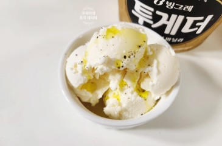#디저트만들기바닐라 아이스크림 올리브유 후추 레시피 투게더 요리 간단한 디저트 만들기 쉬운 디저트쿡쿡이
- 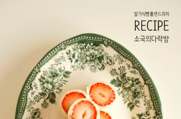#간단간식딸기 식빵롤샌드위치 딸기 샌드위치 딸기 요리 간단 간식소국
- #아침밥참치마요주먹밥 만들기 참치마요 소스 참치주먹밥 만드는법 간단한 아침밥산이맘
- 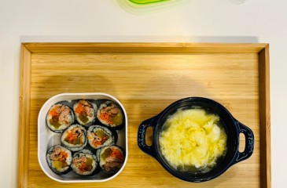#아침밥초등학생아침메뉴 집김밥 햄빼고 이렇게 아침밥 만들어 보세요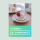빵냄새나는별이네
- 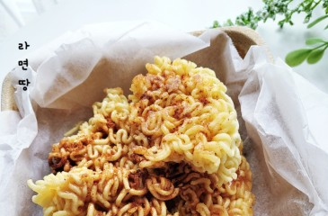#간단술안주라면땅 만드는 법 마요네즈 설탕 백종원 라면땅 전자레인지 레시피 간단 술안주 만들기갱스홈쿡
- #한식디저트한식디저트 만드는법 곶감단지 만들기 초간단 곶감 요리 간단한 디저트 만들기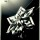홈홈스토리
- #간단간식참치카나페 만들기 캔참치요리 추천 카나페 레시피 간단간식 와인안주 홈파티요리 까나페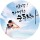순둥작가
- #점심도시락냉동 닭가슴살 볶음밥 다이어트 도시락 만들기 롤유부초밥 점심도시락알콩달콩토끼네
- #다이어트레시피순두부다이어트 살빠지는 순두부그라탕 다이어트 레시피 치즈그라탕 순두부요리제이맘
- #디저트만들기한식디저트 만드는법 곶감단지 만들기 초간단 곶감 요리 간단한 디저트 만들기홈홈스토리
- #캠핑음식등갈비 바베큐 만드는 법 캠핑 등갈비 구이 등갈비 요리마당캠퍼
- #손님초대요리마라탕 재료 셀프 마라탕만들기 땅콩소스 집들이음식 메뉴 손님초대요리
벨루가
- #다이어트레시피간단한 홈 브런치 만드는 법 닭가슴살 또띠아 요리 다이어트 레시피
초대리
- 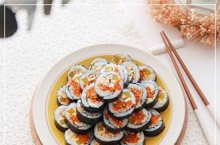#점심도시락당근 계란 김밥 만들기 간단한 김밥 재료 직장인 남편 점심 도시락 메뉴 당근김밥 만드는법홈홈스토리
- #쉬운요리알토란 이연복 배추찜 레시피 소스 알배추찜 쉬운 집들이 음식 배추요리갱스홈쿡
- #냉장고파먹기코스트코 냉동새우요리 칠리새우 만들기 냉장고파먹기빵냄새나는별이네
- 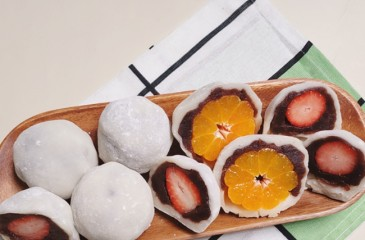#한식디저트한식 디저트 과일 모찌 만들기 딸기 귤 찹쌀떡 만들기 찹쌀가루 인절미 요리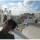까칠감성
- 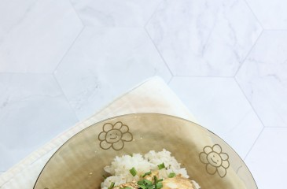#자취생요리편스토랑 이찬원 간장계란밥 레시피 전자레인지 자취생 간단요리
레즐리
- 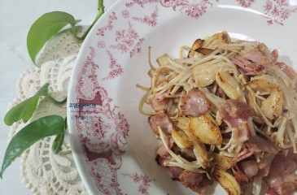#간단술안주베이컨 팽이버섯볶음 베이컨 요리 팽이버섯요리 간단 술안주코델리아
- 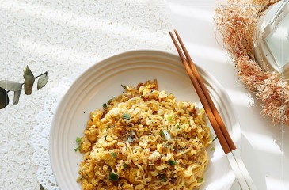#자취생요리백종원 볶음라면 레시피 국물 없는 라면 자취생 간단 요리 라면볶음 만드는 법홈홈스토리